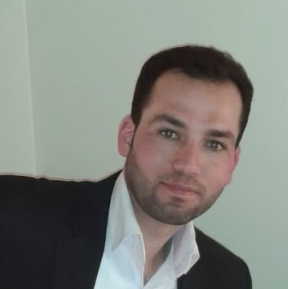

PERSOONLIJK PROFIEL
Ik ben afgestudeerd in de faculteit van elektrotechniek, aan de Universiteit van Damascus-Syrië met een bachelor van Elektronica Engineering & Telecommunicatie. Ik ben op zoek naar een kans om in mijn specialisatie te werken. Werk het liefst in het veld van microcontroller, industriële automatisering, telecommunicatie systemen of netwerken. Ontwikkelen doe ik heel graag door cursussen of stages te volgen, evenals de ervaring die ik zal krijgen van het werken. Ik kan mezelf omschrijven als leergierig.